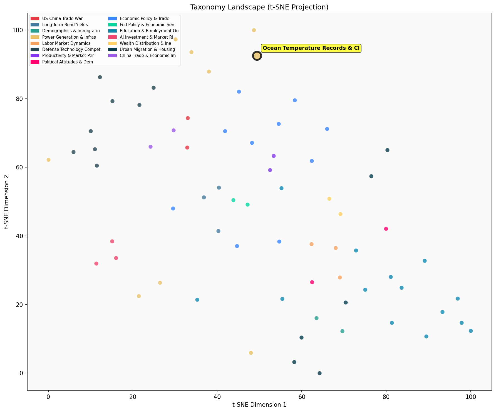

Description
This subcluster focuses on empirical climate data documenting unprecedented oceanic and cryospheric changes. Articles primarily present quantitative measurements from scientific institutions like NOAA and Nature publications, tracking ocean temperature records, marine heatwaves, glacial ice loss rates, and snowpack decline. The content emphasizes statistical benchmarks—record-breaking temperatures, percentage changes in ice coverage, and multi-decade trend analysis. Unlike sibling subclusters examining energy production economics or health policy impacts, these articles function as climate monitoring reports, providing foundational environmental data that underlies broader infrastructure and policy discussions within the parent cluster.
Similarity to All 70 Subclusters
Each cell represents a subcluster. Color intensity shows similarity (blue=low, red=high). Black line marks current subcluster position.
Relationship to Primary Clusters
Average similarity to each of the 15 primary clusters. Larger area = stronger relationship to that cluster.
Taxonomy Landscape
All 70 subclusters positioned by similarity (t-SNE). Current subcluster highlighted with label. Click to enlarge.
Network Connections
Current subcluster at center, connected to related subclusters. Line thickness = similarity strength.
Most Representative Articles
-
1. Heatwaves are currently impacting 44% of the oceans up from a 10% mean. NOAA forecasts 50% of the oc
-
2. Oceans have hit record-high temperatures for the last 365+ days, reaching an all-time high of 70.2°F
-
3. Last week a buoy off the coast of Florida recorded a reading of 101.1°F which might be a record for
-
4. The world’s ocean temperatures reached the second-highest level on record for May, capping an “alarm
-
5. Mean sea surface temperatures are at a record high at the start of 2024 hitting 69.7F in January. T
Edge Cases (Boundary Articles)
-
1. A new @nature study finds that over the past 50 years the snowpack in the Alps has been drawing backThis article is borderline because while it presents quantitative empirical climate data showing unprecedented cryospheric changes (consistent with the cluster's focus), it specifically discusses Alpine snowpack rather than oceanic temperature records, making it more relevant to terrestrial water resources and supply challenges than ocean-focused climate measurements.
-
2. Towns 300 miles south of the Arctic Ocean are seeing temperatures of 100 degrees which could accelerThis article is borderline because while it discusses climate impacts and extreme temperature records (which aligns with the cluster's focus on empirical climate data), it primarily focuses on terrestrial Arctic temperatures and wildfire effects rather than oceanic temperature measurements or cryospheric changes that define the cluster's core theme. The article's emphasis on land-based phenomena like wildfire acreage makes it a poor fit for a cluster centered on ocean and ice-related climate data.
-
3. Life on Earth has maintained chemical disequilibria in the atmosphere, evident in 99% N2 & O2, withThis article is borderline because while it discusses atmospheric composition and trace gases like CO2 and methane (which are relevant to climate science), it focuses on astrobiology and exoplanet detection rather than empirical climate data about Earth's oceans and ice systems. The content is more aligned with scientific discovery and space research than with documenting quantitative oceanic and cryospheric temperature records that define this cluster.
Original Dendrogram